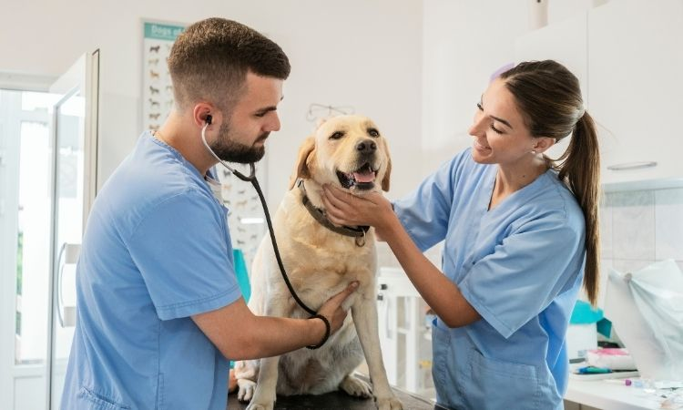

Consulta Veterinaria
Nuestro equipo de veterinarios altamente capacitados está listo para brindar atención médica de calidad a tu mascota. Realizamos consultas, diagnósticos y tratamientos personalizados para asegurar la salud y el bienestar de tu compañero peludo.